是否启用 DML 的参数优化。
参数解析
属性：静态级（需要重启才能生效） 缺省值：0
BATCH_PARAM_OPT 取不同值的效果如下：
- 0：不开启参数优化；
- 1：模式 1，大幅度优化，但是限制较大（参数表优化）；
- 2：模式 2，小幅度优化，但是没有限制（操作符优化）；
- 3：尽量使用模式 1，如果无法触发模式 1 的优化，那就使用模式 2 的优化；
支持 BLOB 等大字段的优化。
原理解析
[!WARNING] 为啥默认值不是 2 呢，操作符优化不配吗？
BATCH_PARAM_OPT=1 （参数表优化）
至于为什么构造参数表会加快批量操作，可能是因为，对表的 join 操作会比一条 SQL 执行多次，造成多次开销更快一些。
[!NOTE] 如果需要优化，则需要满足以下条件：
- 单条 DML 语句；
- 都是输入参数，没有常量参数、输出参数、复合类型的参数；
- 表上没有
ERR_LOG错误日志；- 没有设置批量容错
DSQL_ATTR_IGN_BP_ERR；
有一些疑问，疑问如下：
- 如果参数表够大触发了刷盘，会使用
TEMP表空间吗？ 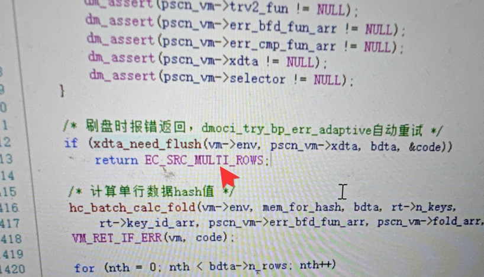 答案是会返回EC_SRC_MULTI_ROWS错误，让客户端使用非批量的方式重试。
INSERT 优化原理
查看以下的执行计划：
insert into users values ( ?, ?, ?, ? );
BATCH_PARAM_OPT = 0时候的计划 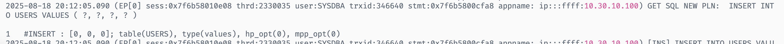BATCH_PARAM_OPT = 1时候的计划 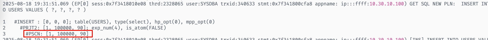INSERT参数中的type取值，会改变成select
他会将 SQL 转换为
insert into users values ("PARAM#0000#COL0", "PARAM#0000#COL1", "PARAM#0000#COL2", "PARAM#0000#COL3");
会先构成一个参数表，表结构如下所示
PARA#0000#COL0 |
PARAM#0000#COL1 |
PARAM#0000#COL2 |
PARAM#0000#COL3 |
|---|---|---|---|
| COL01 | COL11 | COL21 | COL31 |
| COL02 | COL12 | COL22 | COL32 |
通过查询参数表来进行插入，从执行计划可知，PSCN 存在 1000000 行，其实是可以得知需要插入的行数的，参数表是存在表级统计信息的。 |
UPDATE 优化原理
[!NOTE] 如果需要优化更新需要满足以下条件
- 更新列不能是大字段列；
- 只能是查询更新，不能是游标更新（将查询结果存入游标中）；
- 查询条件不包含
rownum；- 没有触发大表更新
bupd（由ENABLE_FAST_UPDATE控制，默认不开启）；- 所有的更新列都需要满足更新、查询分离；
查看一下的执行计划
update users set a = ? where b = ? and c = ? and d = ?
BATCH_PARAM_OPT = 0时候的计划 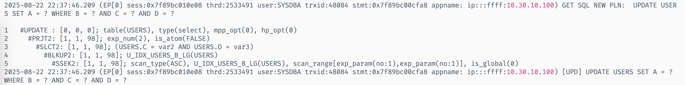BATCH_PARAM_OPT = 1时候的计划 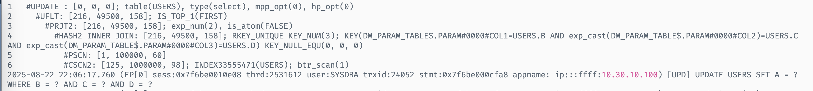 依旧可以看到，将插入的参数转换为参数表并且与USERS做HASH连接。这样可以免于将USERS扫描 100w 次，只需要扫描一次即可。
等于将此 SQL 改写成了
update users set a = "PARAM#0000#COL0" from SYSDBA."DM_PARAM_TABLE$" where ( users.b = "PARAM#0000#COL1" and users.c = "PARAM#0000#COL2" and users.d = "PARAM#0000#COL3" )
这时，其实就有个问题了，假如我对一列进行多次更新，如何保证最后结果集的正确。按照研发说的话，服务端会先使用参数表优化执行，然后 PSCN 会检查是否有重复行，如果有重复行，则返回 EC_SRC_MULTI_ROWS 给客户端，然后以非批量的方式重新执行。
测试如下 Java 代码
preparedStatement.setInt(1, 2);
preparedStatement.setString(2, "1");
preparedStatement.setInt(3, 1);
preparedStatement.setInt(4, 1);
preparedStatement.addBatch();
preparedStatement.setInt(1, 4);
preparedStatement.setString(2, "1");
preparedStatement.setInt(3, 1);
preparedStatement.setInt(4, 1);
preparedStatement.addBatch();
最后会是将 a 的值更新为 2 还是 4 呢？来看下 sqllog 的截图
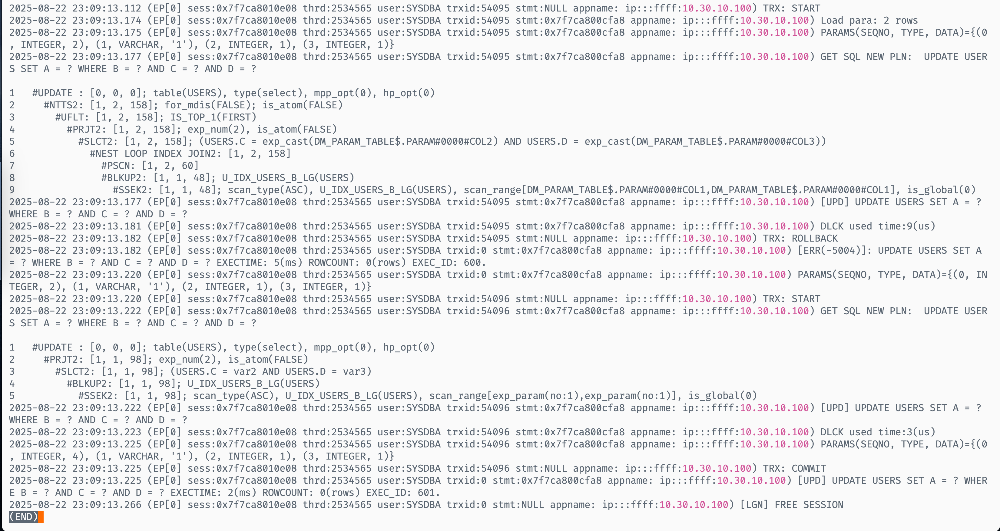
首先使用了 PSCN 优化，但是途中报错 -5004，然后去掉了 PSCN 优化，重新执行。
-5004 的含义为：无法在源表中获得一组稳定的行，因为我的 where 条件是相同的，所以会获得两行，确实报错。所以说，他不会单纯的对比参数表的整行数据，因为我更新的值是不一致的，他会对比 where 之后条件那一行的数据。
[!CAUTION] 其实目前就有一个很蠢的问题了，刷盘和重复值都会报错，而且都是
EC_SRC_MULTI_ROWS，那我如何判断现在到底是什么报错呢？
DELETE 优化原理
[!NOTE] 如果需要优化删除需要满足以下条件
- 需要时查询删除，不能是游标删除（将查询结果集存入游标中）；
- 查询条件不包含
rownum；delete from users where a > ? and a < ?这种复杂查询的时候；
使用如下 SQL，查一下执行计划
delete from users where a = ? and b = ? and c = ? and d = ?
BATCH_PARAM_OPT = 0时候的计划 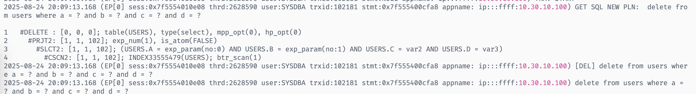BATCH_PARAM_OPT = 1无索引时候的计划 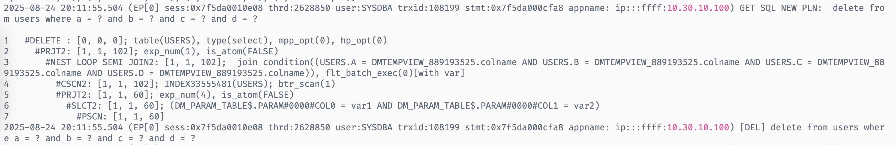BATCH_PARAM_OPT = 1有主键的时候的计划 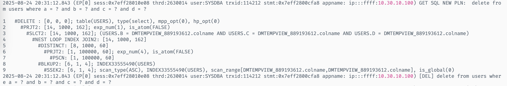BATCH_PARAM_OPT = 1有唯一非聚集索引时候的计划 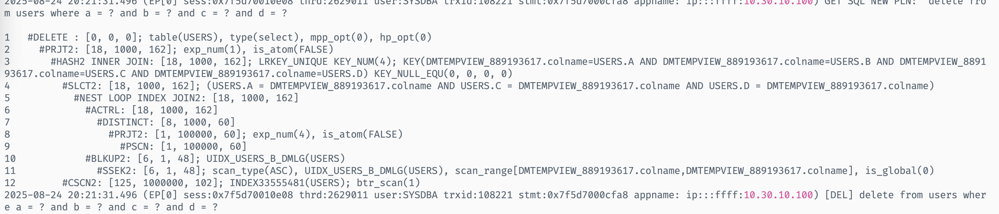BATCH_PARAM_OPT = 1有聚集索引时候的计划 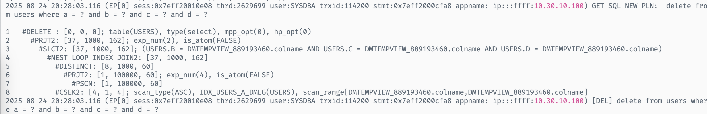 一样可以通过users表的情况（增加索引，增加 hint）来优化删除的SQL。
BATCH_PARAM_OPT=2 （操作符优化）
操作符优化不会改变计划，在保证结果正确的情况下，精简了一些执行流程，比如指令跳转，vm_node 创建、销毁等。
优化前每行参数通过指令跳转，每行参数都是一次完整的执行，有额外的初始化、销毁代价；
优化后在 NINS2/NUPD2/NDEL2/NMRG 等操作符内直接加载下一行参数；
[!NOTE] 几乎没有限制，只是单条语句即可。
实验测试
我们尽量做一个实验，针对于 BATCH_PARAM_OPT 参数，来做开启优化和不开启优化的对比，以 sqllog 里面的时间为准。
有以下四种场景：
INSERTUPDATEDELETE
为了方便，本次测试使用 Java 代码中的 batchExecute 接口进行测试。以下所有测试时间都是通过 vpn 连接至数据库服务器上，有延迟是很正常的现象，并且只测试了一次，有误差也是很正常的现象，大致趋势没有问题即可。
本次测试只是为了心中对 BATCH_PARAM_OPT 优化速度有个预估而已。
INSERT 测试
表结构如下：
create table users (
a int,
b varchar(10000),
c bigint,
d decimal(16, 2)
);
Java 代码如下：
public class Main {
public static void main(String[] args) throws ClassNotFoundException, SQLException {
System.setProperty("socksProxyHost", "192.168.15.101");
System.setProperty("socksProxyPort", "1080");
String jdbcString = "dm.jdbc.driver.DmDriver";
String urlString = "jdbc:dm://10.76.11.205:65236";
String username = "SYSDBA";
String password = "DMDBA_hust4400";
String batchInsertSql = "INSERT INTO USERS VALUES ( ?, ?, ?, ? )";
Class.forName(jdbcString);
Connection connection = DriverManager.getConnection(urlString, username, password);
PreparedStatement preparedStatement = connection.prepareStatement(batchInsertSql);
for (int i = 0; i < 1000000; i ++) {
preparedStatement.setInt(1, i);
preparedStatement.setString(2, String.valueOf(i));
preparedStatement.setInt(3, i);
preparedStatement.setInt(4, i);
preparedStatement.addBatch();
}
preparedStatement.executeBatch();
preparedStatement.close();
connection.close();
}
}
以上代码会批量插入一百万数据。最好是先执行一次，然后 truncate users 表，然后再重新插入一下。以防止数据页申请的消耗。
BATCH_PARAM_OPT = 0执行时间为 30877ms；BATCH_PARAM_OPT = 1执行时间为 468ms；BATCH_PARAM_OPT = 2执行时间为 26295ms；
BATCH_PARAM_OPT = 0 的 sqllog 截图。
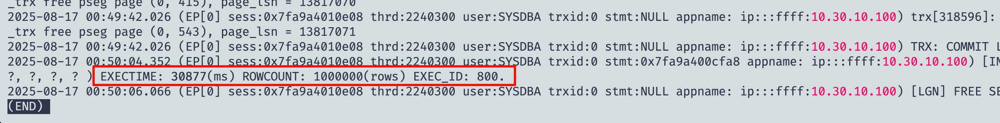
BATCH_PARAM_OPT = 1 的 sqllog 截图。
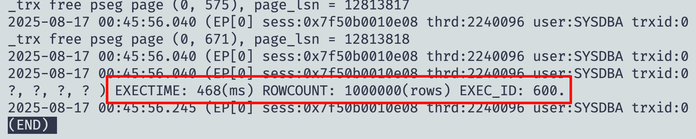
BATCH_PARAM_OPT = 2 的 sqllog 截图。
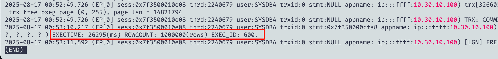
三种取值的柱状图如下
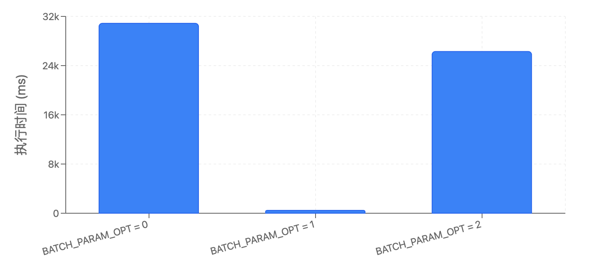
[!WARNING]
- 只能是单组值的批量插入，只能是
insert into test values ( ? )，不能是insert into test values ( ? ), ( ? )，也不能是insert into test select a from test_1；但是为啥不支持这个优化呢？- 插入的时候不能带默认值，也就是不能是
insert into test values ( ?, DEFAULT )；
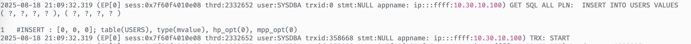
insert into users values ( ? ), ( ? ) 确实是不支持优化。
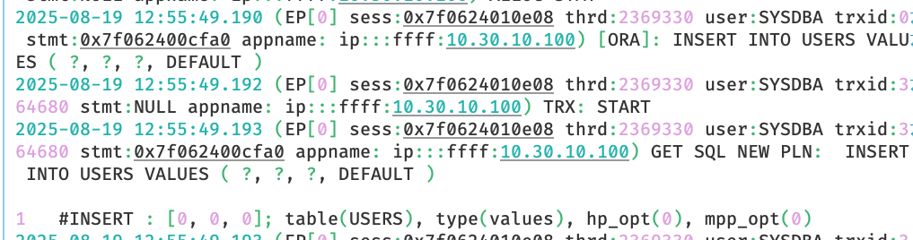
同样，insert into users values ( ?, ?, ?, default ) 也确实不支持优化。
UPDATE 测试
表结构同上，同样插入上面的 100w 数据。UPDATE SQL 如下
UPDATE USERS SET A = ? WHERE B = ? AND C = ? AND D = ?
不存在唯一索引的情况
UPDATE 可以直接执行，不需要 truncate 然后重新插入。但是 update 100w 数据跑不出来，所以目前只测试 1w 的数据。
BATCH_PARAM_OPT = 0执行时间为 695759ms；BATCH_PARAM_OPT = 1执行时间为 162ms；BATCH_PARAM_OPT = 2执行时间为 674550ms；
BATCH_PARAM_OPT = 0 的 sqllog 截图
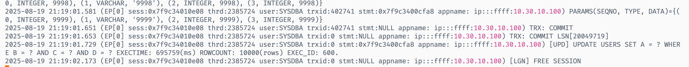
BATCH_PARAM_OPT = 1 的 sqllog 截图
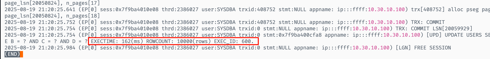
BATCH_PARAM_OPT = 2 的 sqllog 截图
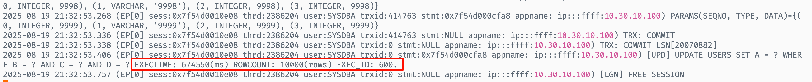
三种取值的柱状图如下 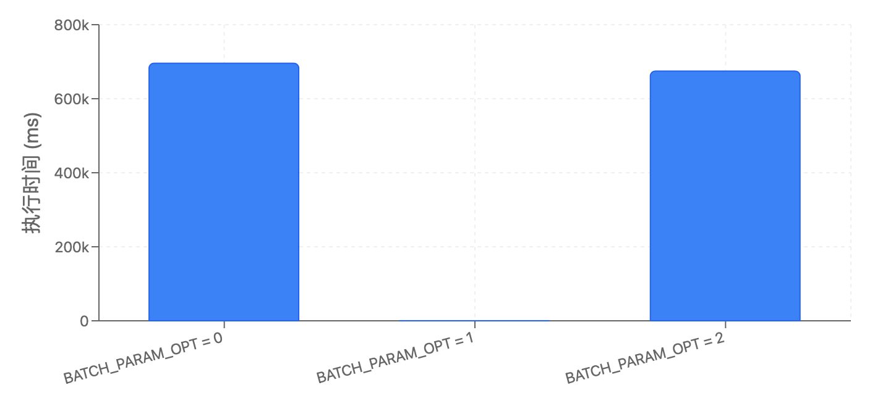
[!WARNING]
- 如果 where 条件出现了更新列，则不能优化；
update users set a = b+1 where a = ?- 如果 where 条件是非等值条件，则不能优化；（批量绑定中，会对同一行反复更新，后一次更新会依赖前一次更新，所以不能优化）
update users set a = a+1 where b > ?
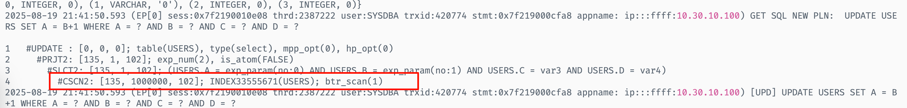
update users set a = b+1 where a = ? 无法优化。
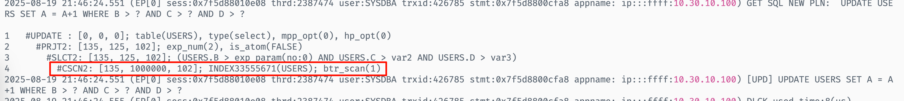
update users set a = a+1 where b > ? 确实无法优化。
存在唯一索引的情况
创建如下唯一索引
create unique index u_idx_users_b_lg on users(b);
插入 100w 数据后，执行上述代码进行更新，但是数据量改为 100w
BATCH_PARAM_OPT = 0的执行时间为 64327ms；BATCH_PARAM_OPT = 1的执行时间为 4645ms；BATCH_PARAM_OPT = 2的执行时间为 52973ms；
BATCH_PARAM_OPT = 0 的 sqllog 截图
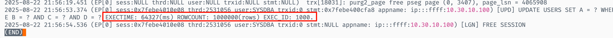
BATCH_PARAM_OPT = 1 的 sqllog 截图
执行计划为
 速度为
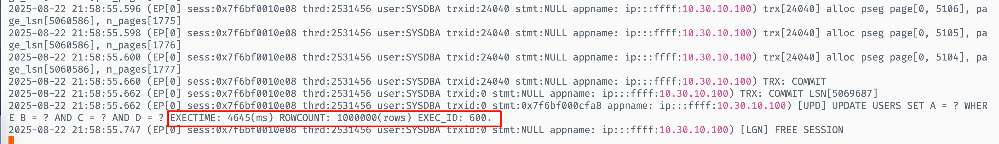
此时测试一下 100w 不带唯一索引的速度
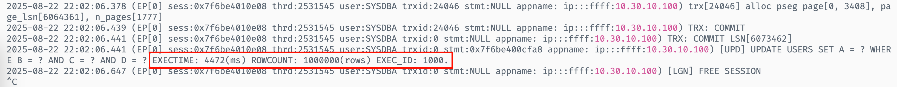
其实非常近似，执行计划为
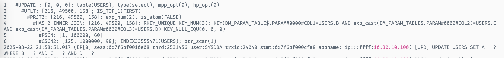
所以可以发现，带不带唯一索引其实对
速度为
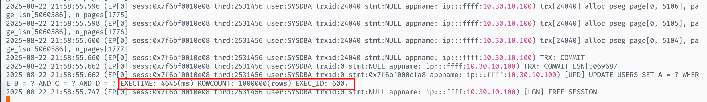
此时测试一下 100w 不带唯一索引的速度
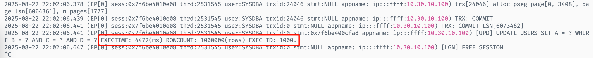
其实非常近似，执行计划为
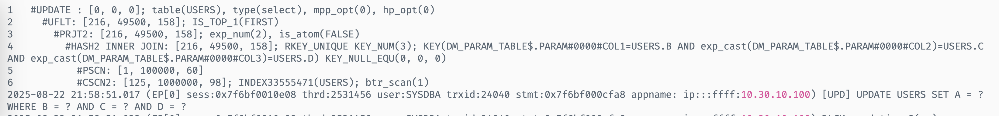
所以可以发现，带不带唯一索引其实对 BATCH_PARAM_OPT = 1 的执行计划没有关系，所以执行时间非常近似。
其实也有一些关系，当把索引改成全列索引时，就会走 SSCN，从而减少扫描页数来优化执行速度。
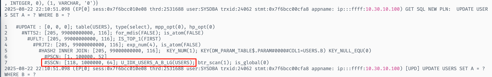
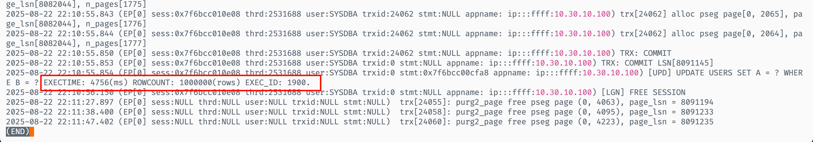
BATCH_PARAM_OPT = 2 的 sqllog 截图
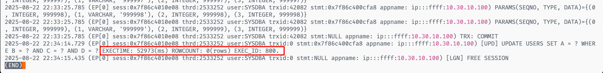
三种取值的柱状图如下
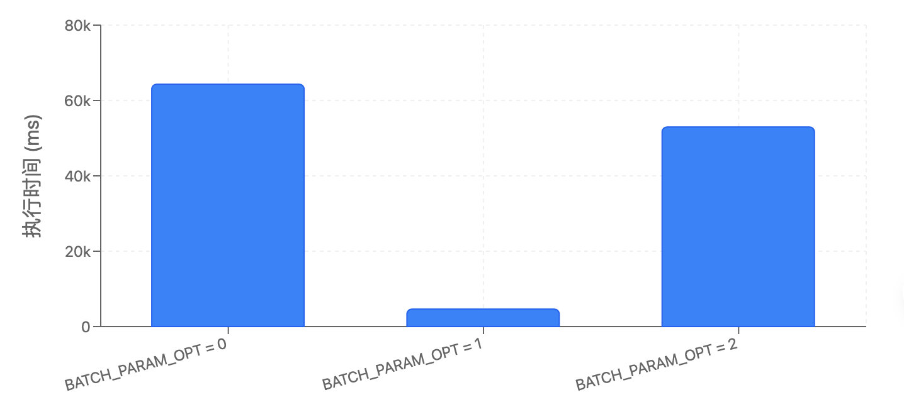
DELETE 测试
表结构同上，同样插入上面的 100w 数据。DELETE SQL 如下
delete from users where a = ? and b = ? and c = ? and d = ?
新建一个唯一索引
create unique index uidx_users_a_dmlg on users (a);
每次执行的时候，都需要先插入 100w 数据，然后再执行 delete
BATCH_PARAM_OPT = 0的执行时间为 27379ms；BATCH_PARAM_OPT = 1的执行时间为 11650ms；BATCH_PARAM_OPT = 2的执行时间为 16954ms；
BATCH_PARAM_OPT = 0 的 sqllog 的截图
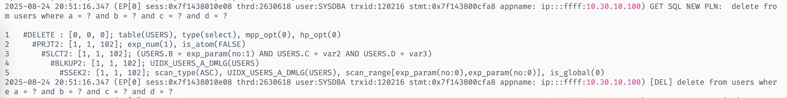
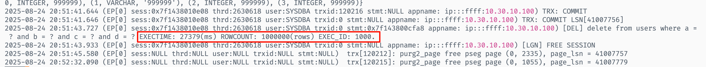
BATCH_PARAM_OPT = 1 的 sqllog 的截图
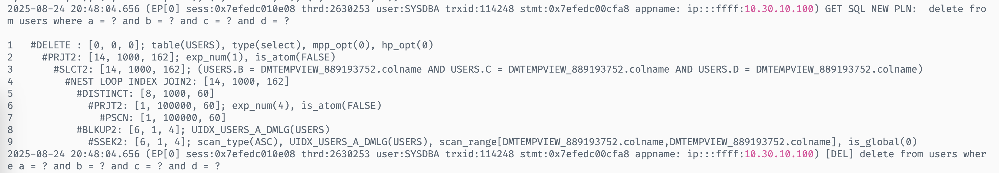
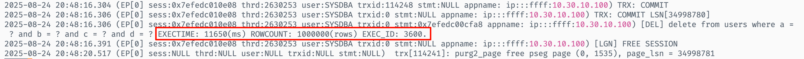
BATCH_PARAM_OPT = 2 的 sqllog 的截图
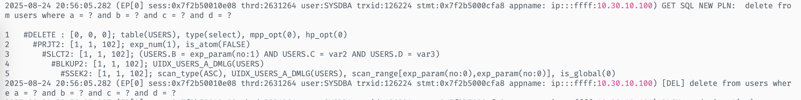
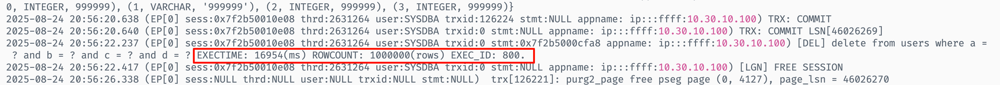
三种取值的柱状图如下
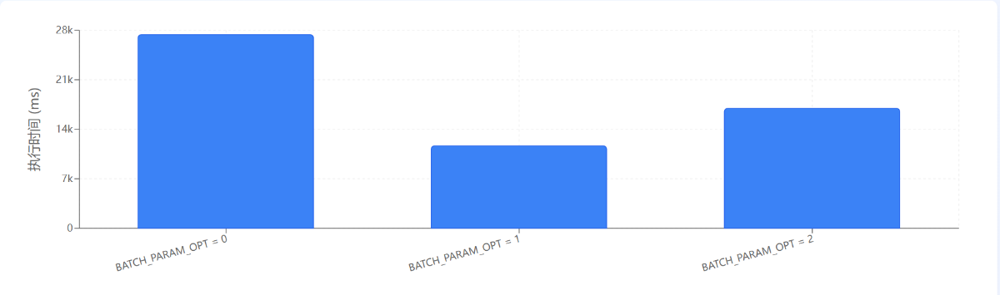